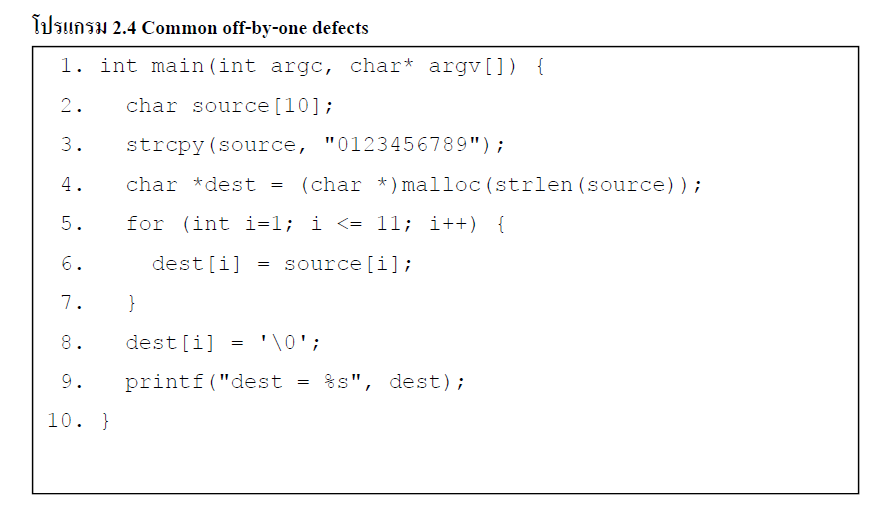

| อีกปัญหาที่พบบ่อย กับ String ในภาษา C ที่เหมือนกับ unbounded string copies คือจะเกี่ยวข้องกับ การเขียนค่าใน array โดยจะเป็นการเขียนค่านอกขอบเขต ของ array | ||
|

รูป 2.4 Common off-by-one defects |
||
-source character array ( ที่ประกาศ ไว้ในบรรทัด 2) คือ 10 ไบต์ของ long แต่ strcpy ( ) (ประกาศไว้บนบรรทัด 3) จะ copy 11 ไบต์ รวมทั้ง null terminator
-malloc ( ) ฟังก์ชัน (บรรทัด 4) จะจัดสรรหน่วยความจำ ใน heap ของความยาวของ string ของ source ตามค่า ที่ส่งกลับโดยฟังก์ชัน strlen () ไม่นับรวม null -The index value ของ i ใน for (บนบรรทัด 5) เริ่มต้นที่ 1 แต่ ตำแหน่งแรก ใน อาร์เรย์ของภาษา C คือ 0 - The ending condition ของ loop(บนบรรทัด 5 ) เป็น i < = 11 -การกำหนด ในบรรทัด ที่ 8 ทำให้เกิดการเขียนออกนอกขอบเขตของการเขียน |
||